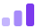

cap-tierSame page.
Lighter on weak phones.
cap-tier sets data-tier="low|mid|high" on <html> before first paint, so your CSS can turn off blur, heavy animation and 3D on weak devices — and your JS can skip heavy imports entirely. Under 2 KB. No dependencies.
Live demo — this page is running cap-tier
| Signal | Value |
|---|---|
CPU cores (hardwareConcurrency) | – |
Device memory (deviceMemory) | – |
Connection (effectiveType) | – |
Data Saver (saveData) | – |
prefers-reduced-motion | – |
| Live FPS (this page) | – |
| Override | – |
Force a tier
Or open with ?cap=low · ?cap=mid · ?cap=high. An override locks the tier — the FPS check won't change it.
Stress test — watch the tier drop
This burns ~45 ms per frame on purpose, so FPS falls under 30 — then CapTier.recheck() runs and the tier drops one level. It never goes back up (downgrade-only). Turn it off to stop the load; the tier stays where it dropped.
What changes per tier
.anim-heavy — floats forever. Off on
low and mid..anim-3d — perspective tilt, flattens on hover. Off on
low.Uses
backdrop-filter: blur(18px). On low it becomes the solid --glass-fallback tint instead. Force low above and watch it go flat.| Tier | Blur | Heavy animation | 3D |
|---|---|---|---|
| low | solid tint | off | off |
| mid | kept | off | kept |
| high | kept | kept | kept |
Install — as easy as Bootstrap
Two tags in <head>. The script must come before your CSS so the tier is set before first paint — that's the whole trick.
<script src="https://cdn.jsdelivr.net/gh/MrtinMlr/cap-tier@main/cap-tier.min.js"></script>
<link rel="stylesheet" href="https://cdn.jsdelivr.net/gh/MrtinMlr/cap-tier@main/cap-tier.css">Or download the files and self-host:
git clone https://github.com/MrtinMlr/cap-tier.git
# or download the zip:
# https://github.com/MrtinMlr/cap-tier/archive/refs/heads/main.zipnpm install cap-tier — the name is free on npm but the package isn't published yet. Until then, the CDN links above are the install.
Usage
1. Put the script first in <head>
Before any render-blocking CSS. If it loads after first paint, the tier still works — but users may see one flash of heavy effects.
2. Add the companion CSS after your stylesheet
It maps the tiers to plain CSS. Define --glass-fallback to choose the solid color low-tier devices get instead of blur:
:root { --glass-fallback: rgba(20, 20, 28, .94); }3. Use the hooks
/* Your own rules per tier */
[data-tier="low"] .glass { backdrop-filter: none; background: var(--glass-fallback); }
[data-tier="low"] .hero-video { display: none; }
/* Or use the built-in classes: .glass, .anim-heavy, .anim-3d */
/* JS: skip heavy work entirely */
if (CapTier.tier() !== "low") {
import("./heavy-3d.js");
}API
| Call | Does what |
|---|---|
CapTier.tier() | returns "low" | "mid" | "high" |
CapTier.set("low") | forces a tier, remembers it in localStorage |
CapTier.recheck() | re-runs the ~2 s FPS check on demand (downgrade-only) |
?cap=low | URL override — handy for testing |
How the tier is picked: hardwareConcurrency + deviceMemory (+ saveData / slow connection). prefers-reduced-motion: reduce forces low. Chromium-only signals are guarded — other browsers fall back to mid-range defaults. Then a ~2 s FPS sample after load can only drop the tier, never raise it.